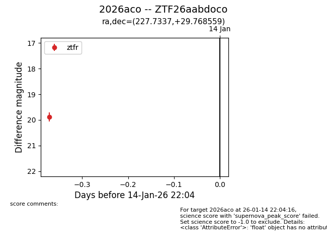
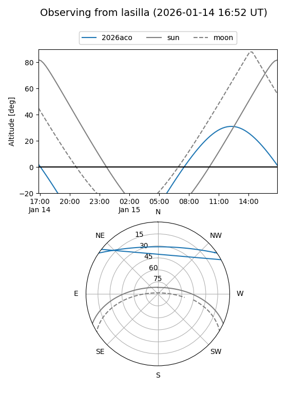

2026aco
Target 2026aco at 2026-01-18 21:16
Aliases and brokers:
FINK: link
Lasair: link
ALeRCE: link
TNS: link
YSE: link
alt names
ZTF26aabdoco (ztf,fink_ztf)
2026aco (tns,yse)
Coordinates:
equatorial (ra, dec) = 227.7337,+29.76856
equatorial (HMS+DMS) = 15:10:56.09,+29:46:06.81
galactic (l, b) = (46.2127,+59.33869)
Flags:
Photometry:
last ztfr=20.03
2 ztfr detections
Lightcurve

Visibility


Additional plots